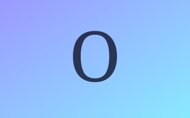

About Chakra
is an AI interviewer from HackerRank that runs full, multi-modal interviews across voice, chat, a collaborative whiteboard, and a real code editor.
It interviews for any role you can think of: software engineers, forward deployed engineers, AI engineers, product managers, sales reps… and, apparently, partners.